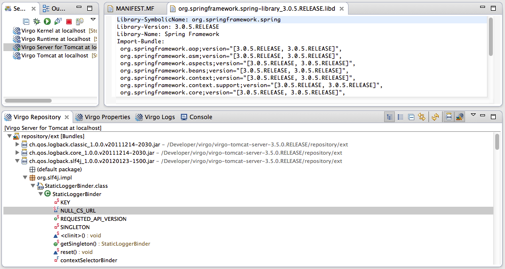
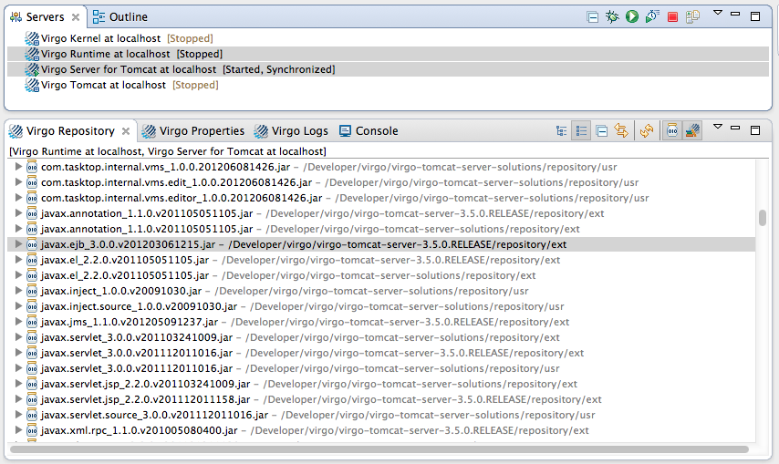
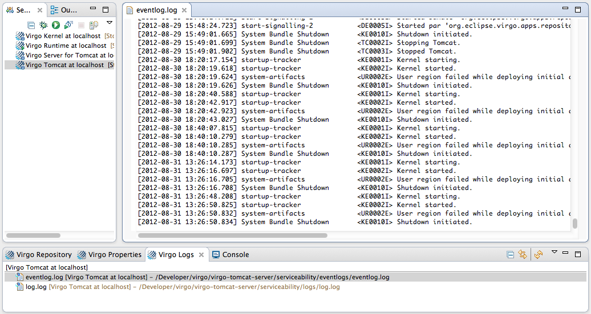

You can explore the contents of installed servers using the Virgo Server Views. These views are designed to help you get to resources on the server without having to switch to the native file system, and integrate those resources with other Eclipse IDE tools. (You can also use the Virgo views from within other perspectives, of course. Select → → and then open the "Virgo" folder to display them.)
The Virgo Repository view allows you to work directly with the contents of installed bundles and libraries on Virgo Runtime instances.

To view resources, select a repository in the Servers View. You can customize what and how they are displayed using the view toolbar buttons.
You can select multiple respositories as well, allowing you to easily navigate and compare resources on multiple servers. You can double-click on items, open them, and even explore class hierchies and other Eclipse features by right clicking on the repository resources.
Hint: In the example below we have selected the Flat Layout and can see that javax.ejb library is present in one Virgo Runtime, but not the other.

The Virgo Properties view allows you to inspect the properties of Virgo Runtime instances. Rather then digging through files on the server instance to find the parameters you need to adjust, simply select the server(s) you want to find parameters for, and a list of properties files will be displayed in the editor. To open a file in the appropriate Eclipse editor, just double-click on it. Or open a tree node and double-click on a specific property and the property value will be highlighted for editing.

Hint: Not sure where a given property is even located? You can easily see all properties within a given Virgo Runtime across all properties files, sorted by name. Click the "List" button in the view toolbar. You can even see properties across runtime instances by selecting multiple servers in the Server View.

The Virgo Logs view supports easy access to runtime log files. As with the other views, just select the Virgo Runtime instance(s) you are interested in. Then double-click to open the relevant log file.

The Console view is the same view that is used in the Java and other perspectives. It displays the console activity for the last server instance you launched, assuming that you haven't launched another console hosted process in the mean-time. (This view is not connected to the Server View -- if you want to examine consoles for differnt running servers, click the "Down Triangle" icon in the view toolbar and select the appropriate console.)